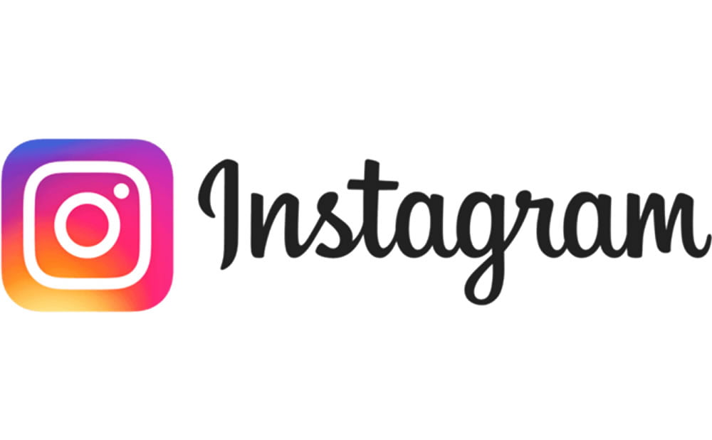
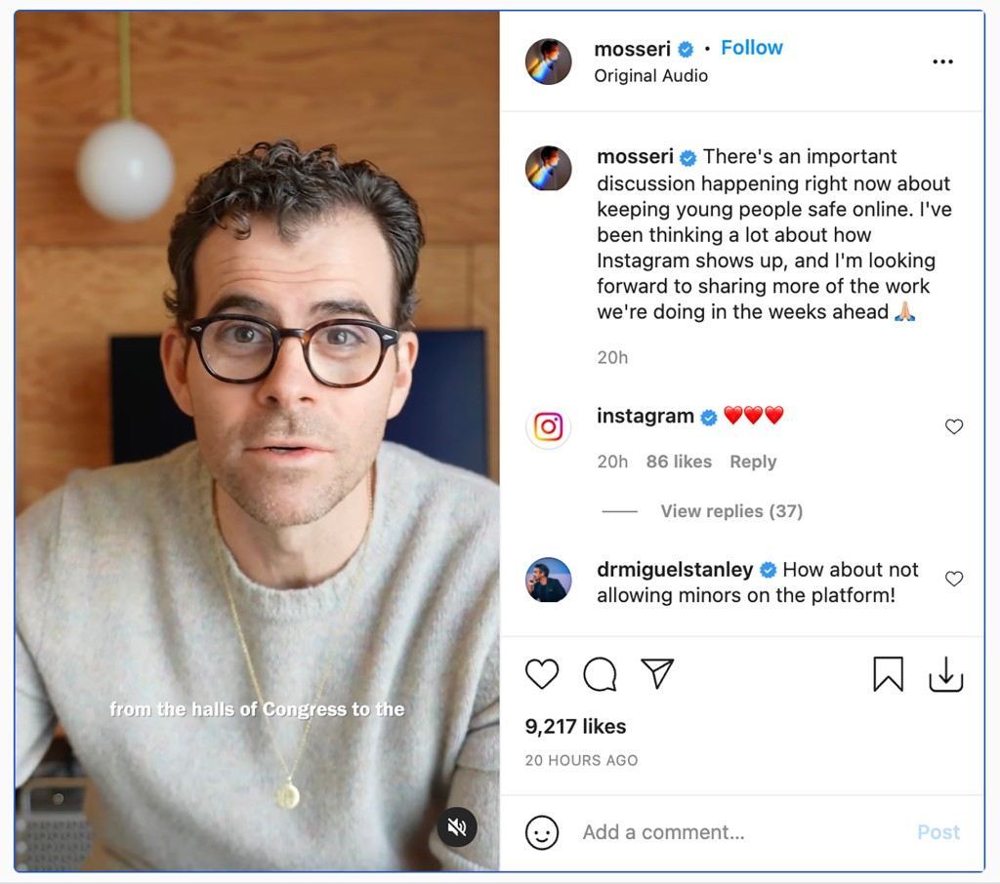
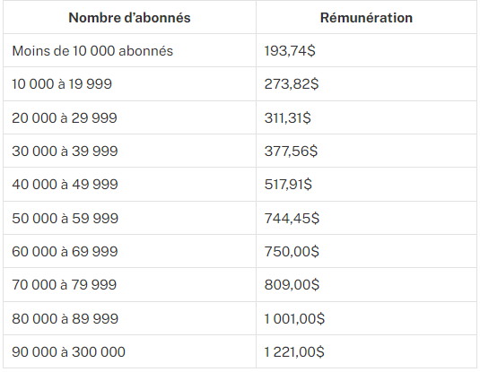

Selon moi: Les réseaux sociaux sur Internet sont des applications ayant comme objectif de relier des
amis, des connaissances ou des associés.
INTRO:
Initialement, Instagram a été lancé en tant qu’application iOS en 2010 et existait exclusivement sur la plate-forme iOS jusqu’en 2012 lorsque son homologue Android a été lancé aussi. En 2016, Instagram a finalement obtenu sa version Windows Mobile.
L’application Instagram pour smartphone a été téléchargée par des millions de personnes qui l’utilisent pour ajouter des filtres stylistiques, des cadres et des effets aux photos.
Depuis son lancement, l’application a connu une croissance exponentielle, passant d’un grand nombre d’utilisateurs au cours des deux premiers mois sur le marché à 800 millions d’utilisateurs en septembre 2017. Puis en octobre 2021 plus d'1,393 milliard d'utilisateurs instagram

Comment s'est créé instagram et à quoi ça sert ?
instagram est apparu il y a quelques années, juste après minuit, le 6 octobre 2010, Kevin Systrom s’est connecté à son panneau de configuration Apple App Store, et en un clic, Instagram, l’application de partage de photos qu’il avait créée avec Mike Krieger, était ouverte sur le monde. Il s’agit d’une plateforme de partage de photos et de vidéos, un réseau social en ligne qui permet aux utilisateurs de prendre des vidéos ou des photos, leurs appliquer des filtres numériques et continuer à les partager sur d’autres plateformes de réseaux sociaux comme Twitter, Facebook, Flicker et Tumbr.
Foncadteurs et pdg :
Instagram a été fondé par les 2 co-fondateurs, Mike Krieger et Kevin Systrom.
nos jours, le pdg d'instagram est Adam Mosseri :

Le modèle économique d'instagram :
Les influenceurs(ses) d'instagram gagnent de l'argent :

Abonnements payant sur instagram ? :
Aujourd'hui, sur instagram tout est gratuit, le réseau social est accessible gratuitement, aucun contenu demeure payant. Cependant des nouvelles récentes nous disent que La plateforme veut encore séduire les créateurs de contenu, et planche actuellement sur un système d'abonnement inédit… et payant. Comme sur Patreon et OnlyFans, c'est à dire que les internautes vont peut-être bientôt s'abonner de manière payante à leurs influenceurs et influenceuses préférés sur Instagram.
Public visé d'instagram :
Instagram est un média très utilisé par les jeunes, 74% des utilisateurs ont entre 18 et 34 ans. Instagram peut donc être un excellent levier de communication institutionnelle et promotionnelle pour les entreprises, et notamment pour celles dont l'offre s'adresse à une population jeune. Pour pouvoir s'inscrire sur instagram, il faut avoir minimum 13ans, cependant beaucoup de personnes contournent cette règle.
C'est quoi un algorithme ? :
Un algorithme est composé d'instructions et d'opérations réalisées, dans un ordre précis, sur des données afin de produire un résultat, et souvent résoudre un problème plus ou moins complexe.
Principalement utilisé en informatique, il sert aussi dans d'autres domaines comme la planification de ressources et la cryptographie.
Comment fonctionne l'algorithme d'instagram ? :
L'algorithme Instagram filtre et classe les posts selon divers critères. C'est lui qui décide du classement de chaque publication dans chaque fil d'actualité des utilisateurs d'Instagram. Adam Moressi, le PDG D’Instagram définit « l’algorithme Instagram » comme l’ensemble de règles qui permettent de prédire le contenu susceptible d’intéresser un utilisateur à un moment donné afin de prioriser ce contenu pour qu’il soit vu en premier par les utilisateurs. Par conséquent, l’objectif de l’algorithme d’Instagram est prédire le contenu qui est les plus pertinent pour un utilisateur et de le montrer en priorité à un utilisateur dans le but de le garder actif plus longtemps sur la plateforme.
émotions générées :
Instagram génère une Faible estime de soi, complexes physiques, sentiment de mal-être.
Il impacte différemment notre humeur
Instagram est utilisé pour inspirer et divertir
Nos attentes à son égard et son impact dans notre quotidien
Instagram, pour suivre les célébrités
Le contexte d’utilisation de ce réseau
Instagram est ouvert pour passer le temps voire pour s'aider à s’endormir
Mon explication à l'addiction d'instagram :
Selon moi on devient addict à instagram, tout d'abord en raison de la programmation de son algorithme que nous avons évoqué précedement mais aussi en raison de la présence de discussion messages, généralement les personnes se rendent sur instagram pour répondre à des messages et en allant voir ces messages ils regardent le contenu du fil d'actualité d'instagram qui les fascine.